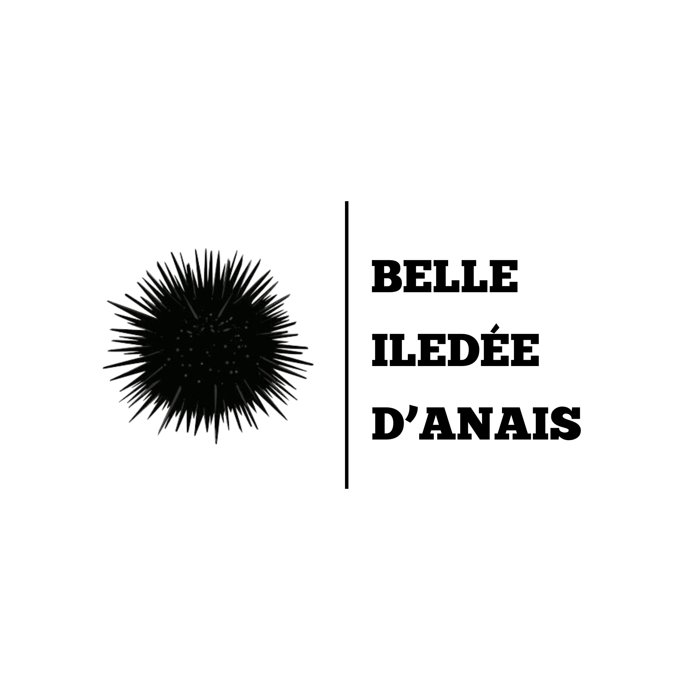
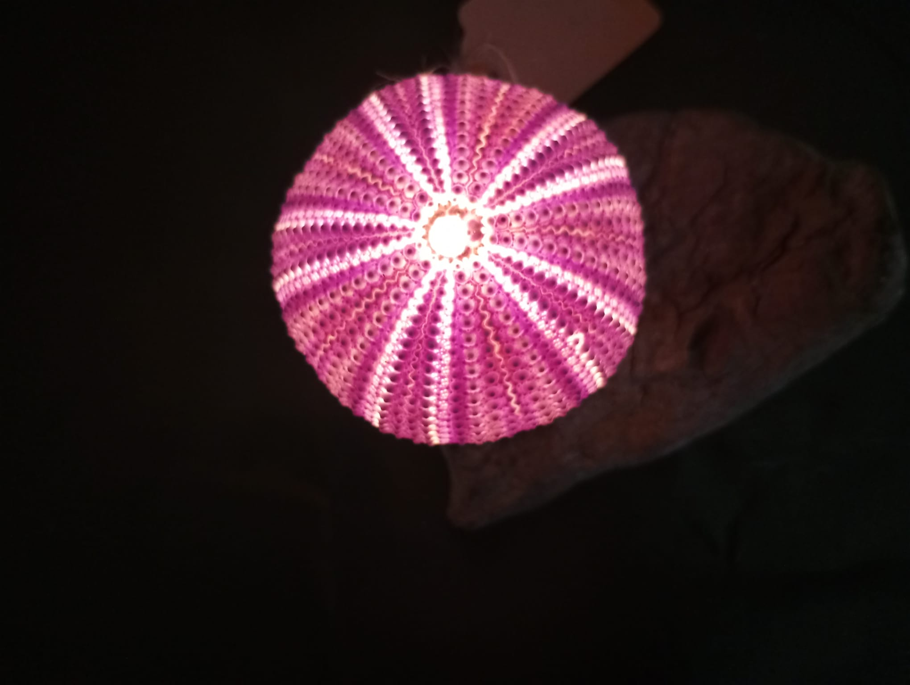
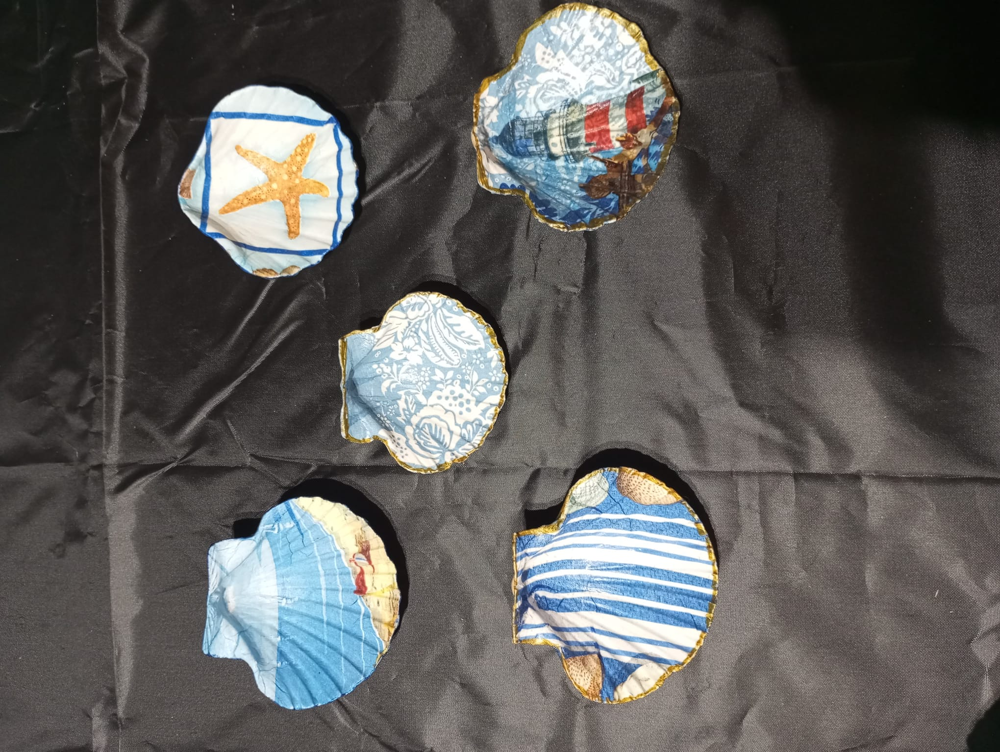

Tout commence sur les plages, au rythme des marées. Le ramassage de bois flotté, d'oursins et de coquillages est une véritable chasse aux trésors. Chaque élément brut possède son histoire, ses aspérités et sa beauté naturelle.

Les oursins sont vidés et nettoyés avec une infinie minutie pour conserver toute leur fragilité et leur géométrie parfaite. Mariés à du bois flotté sculpté par les éléments, ils se transforment en luminaires chaleureux.

Grâce à une technique de décoration minutieuse, les coquilles Saint-Jacques se parent de motifs délicats qui épousent parfaitement leurs formes, devenant des objets de décoration uniques ou de petits vide-poches.